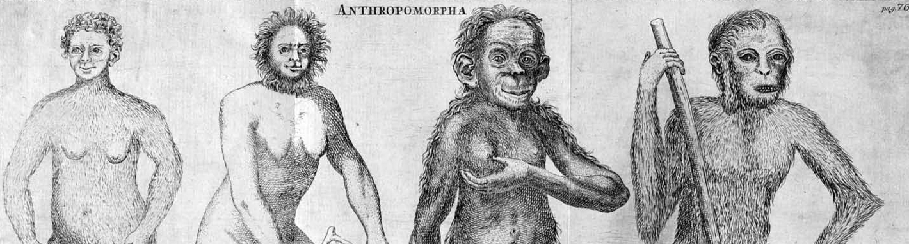
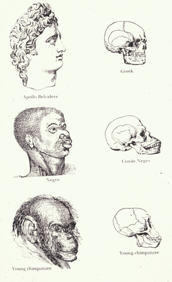
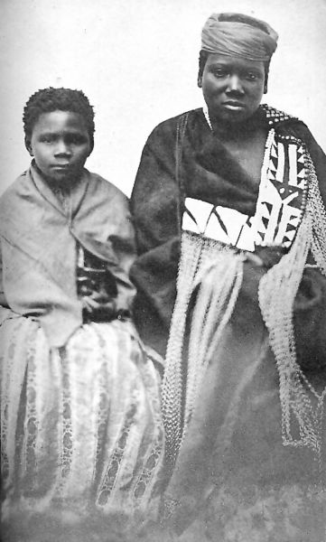

Travel writers who visited South Africa were interested in the social and personal characteristics of the African people they encountered. But all too often, native people were treated as specimens, sketches of them show greatly exxagerated physical features meant to emphasize difference. In the years before Darwin, theories on racial difference and classification were muddled as Europeans tried to reconcile perceived racial differences with the biblical story of Adam and Eve. To many, including Linnaeus, this meant classifying non-Europeans as a subspecies of human. The representation of Africans in early modern travel literature paved the way for the scientific racism of the Victorian era and onward into the twentieth century.

